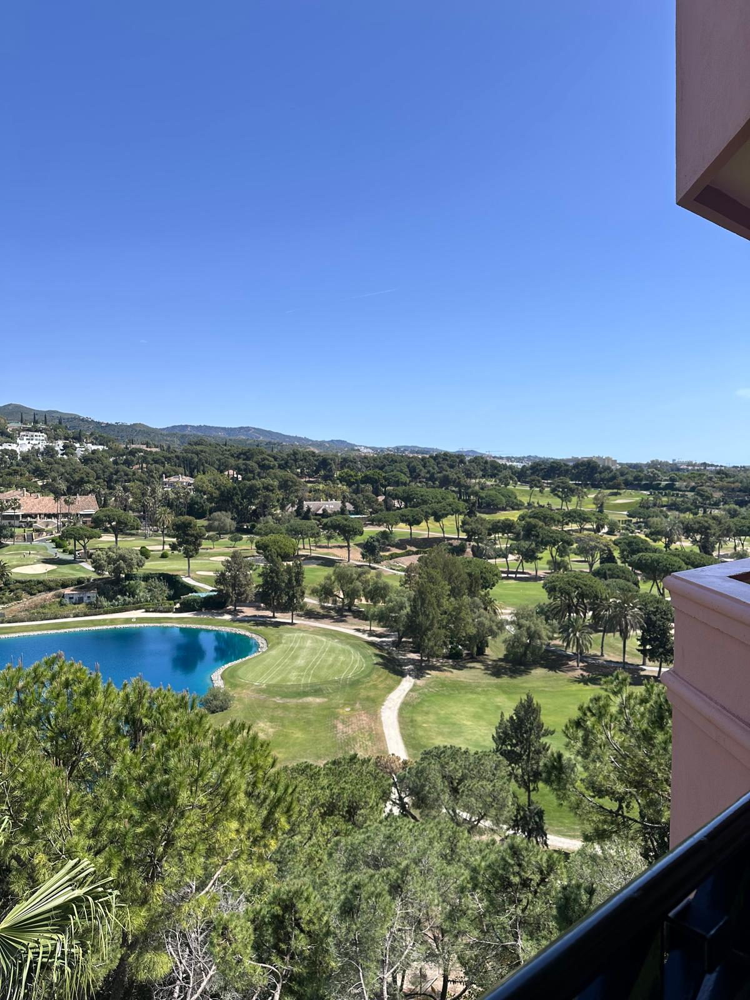
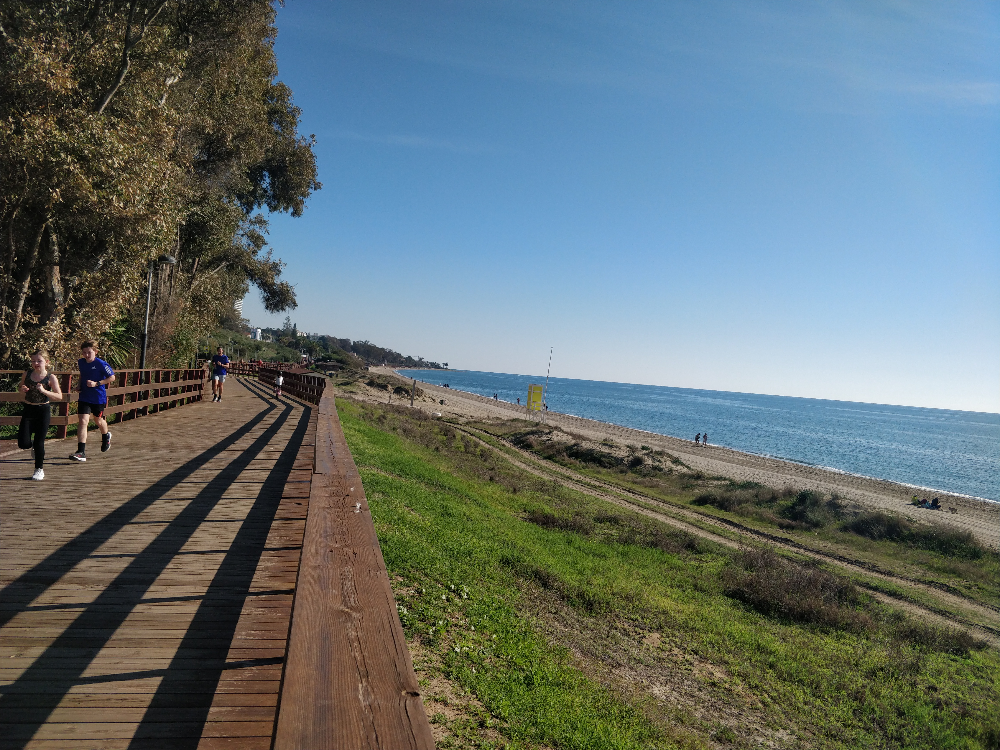

Area Guide · Marbella East
One of Marbella's best-kept secrets: peaceful, green and beautifully elevated, with the city just five minutes away.
Tucked between Rio Real and Marbella, Lomas de Pozuelo is one of those places that residents discover and never want to leave. A low-density, private residential urbanisation with a genuine countryside feel, mature gardens and spectacular views across Marbella and the coast. Yet Marbella's centre is five minutes by car, the beach is fifteen minutes on foot, and La Cañada shopping centre is five minutes in either direction. It is where we both chose to make our home. And once you arrive and see those views, you'll understand why.
Lomas de Pozuelo sits in the hills between Rio Real and Marbella, reached either via the Torre Real turn-off or by heading up through Bello Horizonte from the iconic Marbella Arch.
That elevated position is one of its defining qualities. As you arrive at the entrance to the urbanisation, the views across Marbella and the Costa del Sol open up in front of you. It stops you every time.
"As you arrive, the views across Marbella and the Costa del Sol open up in front of you. It stops you every time."

Lomas de Pozuelo is made up of a series of roads featuring traditional Andalusian and modern luxury villas with mature gardens, private pools and sea views, alongside a small number of carefully considered residential communities.
Eighteen candy-coloured townhouses arranged around a central mature garden and community swimming pool. Low density, beautifully kept and full of character.
A circular urbanisation of white Andalusian-style townhouses, each one slightly different from the next. The homes surround a beautiful community garden with a generously sized communal pool.
Twenty-seven brand new modern luxury townhouses with four and five bedrooms, rooftop pools and sea views. One of the most sought-after new developments in the area.
A contemporary villa complex sitting on the border between Lomas de Pozuelo and Rio Real, combining modern architecture with easy access to both communities.
Despite its peaceful, almost rural atmosphere, Lomas de Pozuelo connects you directly to some excellent outdoor routes.
Several walks start directly from the urbanisation. A beautiful river walk follows the Rio Real through the countryside. A shorter circular route takes you through the hills at a gentler pace. For the more energetic, you can walk up into the hills behind Los Monteros and Los Altos de Los Monteros, with extraordinary views as your reward.
Rio Real Beach is fifteen minutes on foot or three minutes by car. Playa El Cable is ten minutes on foot, with all-day parking available for just one euro. From either beach you can join the Senda Litoral, the wooden coastal boardwalk that stretches along the Mediterranean towards Marbella.
Our favourite thing to do at sunset or first thing in the morning. The dog beach along this stretch is an added bonus for those with four-legged residents.
"Walking to the beach or into Marbella along the Senda Litoral - our favourite thing to do at sunset or first thing in the morning."

A children's park sits next to the urbanisation and a dog park is within a five-minute walk. The bus stop, also five minutes on foot, connects you to Marbella centre and La Cañada via the 6B, and between Cabopino and La Cañada via the 6.
Worth knowing: when you register as a Marbella resident, you receive a free bus pass.
"Register as a Marbella resident and your bus pass is free. One of those small details that makes life noticeably easier."
For everyday dining, the Parrilla de Bello Horizonte is a ten-minute walk away, a local restaurant specialising in barbecue meat and fish that has become a firm favourite with residents.
Rio Real Golf, five minutes by car, is equally good for a long lunch or a catch-up with friends as it is for a round on the course.
Marbella's old town, with its extraordinary range of restaurants, markets and boutiques, is five minutes by car, without touching the highway.
Ask residents what drew them here and you'll hear the same things: peace, views, community, and the quiet pride of having found somewhere that feels like a secret.
The urbanisation is genuinely quiet and private, yet Marbella, the beach and all amenities are minutes away. You don't have to choose between calm and convenience.
A children's park on the doorstep, excellent schools within easy reach, safe streets and a community feel that is increasingly hard to find this close to Marbella.
Multiple hiking routes, river walks, beach access on foot and the Senda Litoral all within walking distance of home. An outdoor lifestyle built into the location itself.
From candy-coloured townhouses to traditional Andalusian villas and brand new luxury developments, Lomas de Pozuelo has genuine variety within a small, well-kept area.
Peaceful surroundings, easy access to Marbella without highway driving, good public transport and a strong community feel. One of the most practical and enjoyable places to retire on the Costa del Sol.
Why We Love Living Here
It feels like the countryside, but Marbella is on our doorstep. We can walk to the beach, catch a bus to La Cañada, hike into the hills or be sitting in Marbella's old town within five minutes, all without touching the highway.
The community is established and neighbourly. The gardens are mature. The streets are quiet.
And every time we arrive home and those views across Marbella and the coast come into sight, we remember exactly why we chose to live here.
Our current listings in Lomas de Pozuelo, from characterful townhouses to luxury villas with panoramic views.
Everything buyers want to know about Lomas de Pozuelo.
Lomas de Pozuelo is a private, low-density residential urbanisation in the hills between Rio Real and Marbella. It is made up of a mix of traditional Andalusian and modern luxury villas, along with several smaller residential communities, all set within a peaceful, green environment with spectacular views across Marbella and the coast.
It sits between Rio Real and Marbella, accessed either via the Torre Real turn-off or through Bello Horizonte from the Marbella Arch. Marbella centre is five minutes by car, with no highway required.
Yes. There is a children's park directly beside the urbanisation, a dog park within five minutes on foot, and excellent schools within easy reach. The streets are safe and quiet, and the community has a genuinely neighbourly feel.
Yes. Rio Real Beach is around fifteen minutes on foot, or three minutes by car. Playa El Cable is approximately ten minutes on foot. From either beach you can join the Senda Litoral coastal boardwalk.
Yes. The bus stop is a five-minute walk away, with the 6B serving Marbella centre and La Cañada, and the 6 running between Cabopino and La Cañada. Marbella residents also receive a free bus pass upon registration.
The area offers a genuine mix: traditional Andalusian villas with mature gardens and sea views, contemporary luxury villas, brand new luxury townhouses at The List, and characterful established communities such as Jardines de las Lomas and Ronda de Alineados.
Because it is home. We both live here and know every road, every community and every view. That is not something you find on a property portal.
Talk to a Local
We live here. We know every road, every community and every view. Let us help you find the right home.